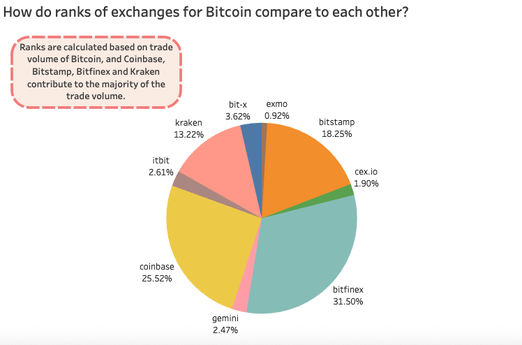

Crypto Learners
Created by:
Jason Nguyen
Joohoon Cha
Roger Tram
Yanni Zhou
1. Trends
2. Property
3. Fluctuation And Prediction
4. Bitcoin
Crypto currenccies were first introduced with the commonly known Bitcoin. It dates back to 2008 when Satoshi Nakamoto, a pseudonymous person, outlined the contents in a white paper, then releasing Bitcoin to the public in 2009. In the late 2010, other similar forms of cryptocurrencies such as Litecoin appeared as well. Alongside the appearance of other crypto currencies, some of the first exchanges using Bitcoin began.
In 2012 WordPress became the first major merchant to accept payment in Bitcoin. Popular cryptocurrency soon began to be accepted as a legitimate method of payment.
Looking at the first visualization, we can see a wide range of prices for some of the current active crypto currencies. We mentioned Bitcoin as the starting point for the digital currency. Due to it’s success and nature, it is not displayed on the visualization as the price value that it has is set at $3, 631.72, which is roughly 8 or 9 times mores than Bitcoin Cash. For this reason, it is not included as it would skew the visualizations and make it difficult to see other data points.
In recent times, crypto currencies have experiences changes to their values, some having more positive, drastic changes while others falling from the top of the ranking list.
Some of the first few cryptocurrencies consisted of the ones listed below:
Bitcoin was and still is the world’s most widely used cryptocurrency. It has a programmed supply limit of 21 million Bitcoin, and is still increasing it’s market cap and unit value as we speak.
Etherum, or ETH for short, launched in 2015 and became to be the second most popular cryptocurrency and the second most valuable one after Bitcoin. It utilizes “smart contracts” that enhances the performance of a transaction, compel parties not to renege on agreements, and contain methods for refunds if a party violates an agreement
Litecoin was released in 2011 and had similar structures to Bitcoin. The only major difference was that the algorithm was slightly different. In regards to supplies and creation time, Litecoin had a higher programmed supply limit of 84 million units with a shorter blockchain creation time of 2.5 minutes.
Ripple was released in 2012 and was known for being a “consensus ledger” system in which drastically speeds up transaction confirmation and blockchain creation times. It is more easily convertible than other cryptocurrencies, where one can convert Ripple units into U.S. dollars, yen, euros, and other common currencies. The downside of Ripple is that it’s network and code are more susceptible to manipulation by hackers.
Dogecoin (DOGE) comes from the recognizable Shiba Inu mascot, and is a variation of Litecoin. It has a shorter blockchain creation time of one minute and a greater number of coins in circulation. It is notable as the “inflationary cryptocurrency”, with experts observing it’s progress to see it’s long-term value trajectory and how it differs from others.
Coinye was a semi-defunct cryptocurrency that developed under Coinye West in 2013 as a similarity to hip-hop superstar Kanye West. It is more of a humorous crytpocurrency that simply has no impact or value in the market.
Due to the numerous number of crypto currencies, it’s difficult to identify and compare one currency from another. Looking at the crypto currencies that are above $50 in price, we can easily see how this small batch compares against one another
Since there are numerous crypto currencies that are being displayed, it can be difficult to read some of the data. The visualization below is a segmented portion of the intial visualization that looks are crypto currencies with price values greater than $90. As you can see, there are only 9 crypto currencies being displayed. From this specific visualization, we can see that Bitcoin Cash has the highest price value, aside from Bitcoin which can’t be displayed, in comparison to the other currencies. Hovering over the bars, Bitcoin Cash also holds a larger market cap than others with a value of 6,815,417,939.
Despite Ethereum being introduced back in 2015, most of the first few crypt currencies showed similar trends regarding changes to their values and prices over time. Around 2018 - 2019, there was a drop in values for each of the crypto currencies that was followed up with a drastic increase to present time. Looking carefully at the graphs, Dogecoin’s trends vary within the decial digits, while the most popular crypto currency Bitcoin has values changing in ten thousands digits.
The primary different between cryptocurrency and stocks is that when you buy crypto, you own a certain amount of that digital currency. It may be possible to use Crypto in transactions as easily as other currencies in the near future, but today it’s primarily a store of value that you can hold onto or sell. Stocks on the other hand are offered by companies as equity or ownership in that company.
Both crypto and stocks can increase or decrease in value, so buying either one involves risk. The difference is that most cryptocurrencies are notorious for drastic changes in value, and sometimes it happens without any clear reason. By comparison stokcs are directly linked to companies that must publicly and regularly share how they’ve been doing and how they expect to do in the future.
From here, we have seen trends in crypto-currency already, now we need to ask questions on why these trends happen and what factors we can look at to potentially be able to predic these trends. (For now, plots for Bitcoin and Dogeboin have been made with adjusted views of the axes, the goal is to make a multi-view visualization where I can select viewpoints of all the graphs at once).
In order to fully understand the rises and drops in crypto-currencies, the charts and data can reveal the many events that occured that have caused these trends. For example, a trend these cryptocurrencies have is the major decline in January of 2018 which gives us a timeframe to research. Among other factors, the disclosure of the 2014 CoinCheck hack along with general mainstream distaste for crypto-currency at this time. Smaller trends that can be discovered from the the visualization of Bitcoin is that the start and end of each April from 2016 and on show positive trends consistently.
Overall, the events that affect crypto-currencies are ongoing and very volatile, even as recent as May 8, 2021, Elon Musk’s appearance on Saturday Night Live caused a 30% drop in dogecoin due to the words he spoke on the crypto-currency.
In this section, we want to introduce one of the most famous cryto-currencies--Bitcoin.
The description from Jake Frankenfield on Investopedia says that “Bitcoin is a type of cryptocurrency. There are no physical bitcoins, only balances kept on a public ledger that everyone has transparent access to. All bitcoin transactions are verified by a massive amount of computing power. Bitcoins are not issued or backed by any banks or governments, nor are individual bitcoins valuable as a commodity. Despite it not being legal tender, Bitcoin is very popular and has triggered the launch of hundreds of other cryptocurrencies, collectively referred to as altcoins.” (Jake Frankenfield, June 2021) Therefore, Bitcoin is a great choice for getting to know the secrets of crypto-currency as it is one of the most important origins of all other crypto-currencies.
In 2021, Bitcoin entered into the views of more people due to the drastic increase in this year. More and more people dive into the investments of Bitcoin to look for more possibilities. So, to begin with the learning about Bitcoin, we will focus on the prices and volume of trades for Bitcoin in the past few years.
From the first visualization above, we can tell that the price of Bitcoin has increased over 900 thousands from 2016 to 2021. Especially in 2021, the price is even more than twice of it in 2018. Also, the scatter plot in the second visualization shows that as the price increases, the trade volumes of Bitcoin increase as well. That is to say, people tend to trade more while the price of Bitcoin gets higher. Then, if we slide the window of the bar chart in the second visualization to include years 2020 to 2022, the data points with high trade volumes and high prices are shown in the scatter plot. In contrast, more data points are concentrated in the range of price from 0 to 20000 USD with other years included. In summary, the prices and trade volumes of Bitcoin have kept increasing for several years with a rapid increase in recent years.
However, opportunities also come with challenges. It is well-known that the value of Bitcoin is extremely volatile, some people are able to get huge profits from the investments of Bitcoin while others fail to overcome the challenges. Thus, we will explore the volatility of Bitcoin by comparing it with SPDR Gold Shares to see the possible risks that may come with the benefits.
The above visualizations show the market capitalization of Bitcoin from 2017 to 2021. We can tell from this visualization that the price of Bitcoin has increased over 1000 billion from 2017 to 2021 while it has increased over 800 billion from 2020 to 2021. So, the majority of market capitalization comes from the recent two years.
To see the volatility of Bitcoin, we compare it to the market capitalization of SPDR Gold Shares since we know that although the price of gold can be volatile in the short term, it has always maintained its value over the long term. From the second graph in this visualization, we can see that the price of gold also has increased from 30 billion to 80 billion between 2017 and 2021 but it does not increase as sharply as Bitcoin does. Therefore, Bitcoin is much more volatile compared to a stable currency.
Lastly, we want to talk about the platforms for exchanges of Bitcoin. Also from the description of Jake Frankenfield, “A bitcoin exchange is a digital marketplace where traders can buy and sell bitcoins using different fiat currencies or altcoins. A bitcoin currency exchange is an online platform that acts as an intermediary between buyers and sellers of the cryptocurrency...Different exchanges have different payment methods that can be used for depositing funds including bank wires, direct bank transfers, credit or debit cards, bank drafts, money orders and even gift cards.” (Jake Frankenfield, July 2020)
So, we will contrast the ranks of 10 distinct platforms for exchanges of Bitcoin calculating based on their volumes. From the pie chart, it is clear that the exchanges of Coinbase, Bitfinex, Bitstamp and Kraken take the majority of the ranks as they contribute 25.52%, 31.50%, 18.25% and 13.22% of the total ranks, which sum up to 88.49% of the total. Therefore, we can see that although there are many exchanges in the market, only a few of them are dominant platforms for trading Bitcoin.
However, the above visualization shows that there is a decreasing trend for the ranks of all exchanges from 2019 to 2021 with a sudden increase in March to May of 2020. The decreasing trend could be caused by the appearance of more platforms of exchanges as the rapid increase in values of Bitcoin attracts more people and companies. For example, the top ranks of Bitcoin exchanges include Binance, Huobi Global and so on. Therefore, it is reasonable for the previous 10 exchanges to have a decrease in trade volumes. However, as we noticed, there was a boom that occurred in March 2020. The reason for this boom is that Bitcoin suffered one of the biggest weekly losses at that time, which led to the sudden increase of trade volumes since more people tend to sell their Bitcoin during that period of time.
In conclusion, Bitcoin brings many possibilities for people to explore the area of crypto-currency while there could be incredible benefits from trading Bitcoin. However, high benefits always come with high risks like the stock market. Therefore, when people are learning and trading Bitcoin, they should always consider the possible losses and failures which will come with possible benefits.